hml_fix (Task #8018 · 05-06/08/2026) — 8 de 9 CTs · COMPLETOO Gate 3 deste bug foi aprovado na TOKIO. O Diego pediu (Task
#8018, 05/08) um reteste na KOVR para confirmar que a correção da branch
hml_fix (commit 41c3ec001) vale também para essa seguradora, e registrou que o deploy já
estava feito. Confirmado: 8 dos 9 CTs executados na KOVR, todos aprovados, zero defeitos (o 9º, CT-FMR-007, é N/A por decisão de negócio). Reteste completo.
| CT | Como foi executado | Resultado na KOVR |
|---|---|---|
| CT-FMR-001 valores ao abrir o Fechamento |
Playwright MCP — Emissão → filtro apólice 59281120251 · filial 001 · ramo 59 · ref 11/2025 → Detalhe |
APROVADO — Comercial 160,00 · Desconto Qtd Viagens 7,50000 / −12,00 ·
Prêmio Líquido 148,00 (não o bruto) · IOF 10,95 · Total 159,39 |
| CT-FMR-002 interagir com "Ajuste" sem digitar |
clique no campo #Ajuste + Tab (dispara o handler), sem digitar nada |
APROVADO — nenhum valor mudou: líquido segue 148,00, desconto 7,5%,
total 159,39. É exatamente a sobrescrita que originou o bug, e ela não ocorre |
| CT-FMR-003 derivados (Custo, IOF, Total) |
mesma interação do CT-FMR-002, conferindo os derivados | APROVADO — IOF 10,95 e Total 159,39 intactos.
Aritmética fecha: 148,00 + 0,44 juros + 0,00 custo + 10,95 IOF = 159,39 |
| CT-FMR-004 persistência via emissão |
ct_fmr_004_persistencia_emissao.py --tenant kovr --apolice 59281120251 --ref 11/2025emite o Fechamento de verdade e confere o que foi GRAVADO em tb_cme_cit |
APROVADO — fechamento 220 gravou
v_pmo_cml 160,00 · v_dsc_rcv 12,00 ·
v_pmo_liq 148,00 · v_pmo_tot 159,39.
O líquido persistido é o com desconto, não o bruto — a cobrança não infla |
| CT-FMR-005 interação com OUTROS campos |
Playwright MCP — no modal, cliquei em Data de Vencimento e desmarquei o IOF, forçando um recálculo de verdade | APROVADO — o recálculo rodou (IOF 43,13 → 0,00, Total
627,63 → 584,50) e o Prêmio Líquido ficou em 584,50, intacto.
Religando o IOF, tudo voltou (43,13 / 627,63 / 584,50) |
| CT-FMR-006 regressão — apólice SEM desconto |
apólice 1005906000020 · ref 11/2025 · zero faixas em
tb_apo_rcv_dsc (medido) · 32 averbações |
APROVADO — Desconto por Qtd de Viagens = 0,00000 e
Comercial 584,50 = Líquido 584,50.
Total 627,63 = 584,50 + 43,13 IOF |
| CT-FMR-008 faixas de desconto |
ct_fmr_008_faixas_desconto.py --tenant kovr |
APROVADO — banco 1/1 conferido (fechamento 211: qtd 1, faixa 1-99 → 7,5%, esperado 1,50 = obtido) · tela 1/1 · 0 divergências |
| CT-FMR-009 relatórios — o alvo da causa raiz |
ct_fmr_009_relatorios_fechamento.py --tenant kovr --apolice 59281120251 --ref 202511 |
PASS — fechamento 50: banco 3840,00 − 288,00 = 3552,00; tela exibe
3.552,00; .zip baixado e aberto, e o
COM-RESUMO-RCV-…-00050.xlsx contém o líquido 3552,00 |
Por que o CT-FMR-009 é o que mais importa aqui: a causa raiz do #7884 foi
o squash do #7319 apagando o suporte a RCV em Domain/RelatorioFechamentoDomain.cs. O CT-FMR-009 é
justamente o que exercita esse arquivo, e a evidência é o arquivo baixado — não a tela nem o
HTTP 200.
1.0.260804.1540 — o mesmo pacote que recusa 100% das averbações do Conversor e que motivou a
Task #8013. Os CTs de Fechamento RCV passam nele. Isso reforça a hipótese de provenance
registrada lá: o .1540 é um build da hml_fix, que tem o commit deste bug
(41c3ec001) e não tem os commits do Conversor. Não é "build quebrado" — é build de um
branch com um subconjunto diferente de correções.
CT-FMR-004 — executado em 06/08, fechando o reteste. Ele estava parado à espera de um aval que não era necessário: emitir em HML é autorização permanente, e o único efeito colateral — consumir a massa livre — é reversível pelo Cancelamento de Fechamento Mensal. Segurar o CT por isso foi um bloqueio autoinfligido, não um impedimento técnico.
Como foi feito: emiti o fechamento da apólice 59281120251
ref 11/2025 (8 averbações livres, comercial 160,00, faixa 1-500 → 7,5%), conferi no banco o que foi gravado e
cancelei a emissão em seguida, devolvendo os 8 movimentos ao estado livre.
| Verificação | Resultado |
|---|---|
desconto gravado bate com a faixa de tb_apo_rcv_dsc | OK — v_dsc_rcv 12,00 = 7,5% de 160,00 |
| líquido gravado é o com desconto | OK — v_pmo_liq 148,00 |
| líquido gravado ≠ comercial bruto (o sintoma do bug) | OK — 148,00 ≠ 160,00 |
| tela e banco concordam no líquido | OK — 148,00 nos dois |
| massa devolvida após o cancelamento | OK — 8 movimentos livres, comercial 160,00 (idêntico ao baseline) |
Por que a evidência decisiva é o banco e não a tela:
a metade "persistência" do #7884 é sobre o que vai para a cobrança. A tela já estava coberta pelos
CT-FMR-001/002/003; aqui o que importa é que v_pmo_liq gravado seja o líquido, e não o bruto.
Mensagem da emissão capturada: "Processamento encerrado. Verifique os resultados."
O CT-FMR-007 permanece N/A (correção retroativa de faturas já fechadas — decisão de negócio em aberto, fora do escopo deste bug).
Higiene: nos CTs 001/002/003/005/006 saí de todos os modais pelo Voltar,
nunca pelo Confirmar. No CT-FMR-004 a emissão foi proposital e revertida pelo Cancelamento.
Estado final conferido no banco: apólice 1005906000020 com 32 movimentos livres,
59281120251 com 8, e apenas os fechamentos pré-existentes 45 e 50 — nenhum resíduo.
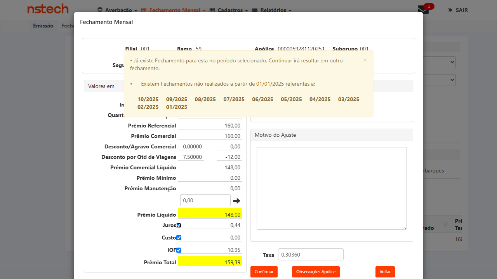
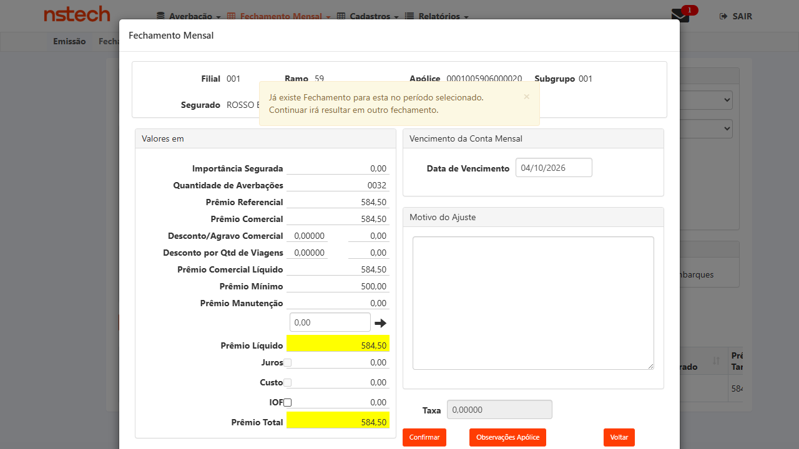
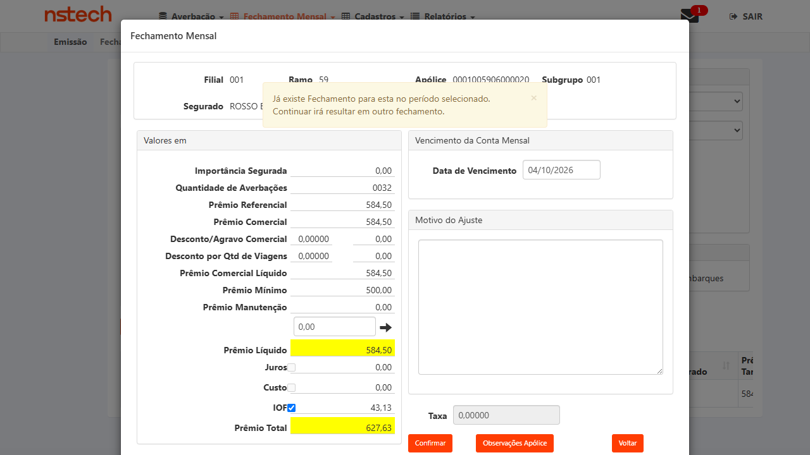
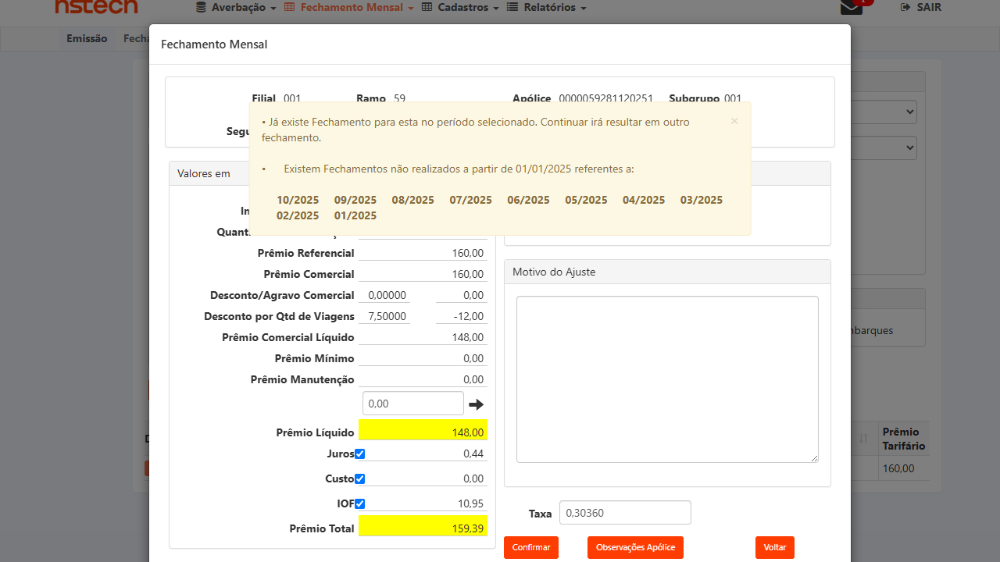
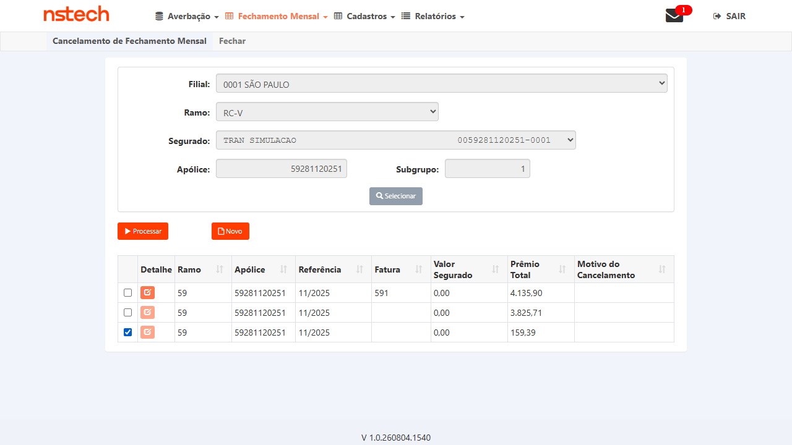
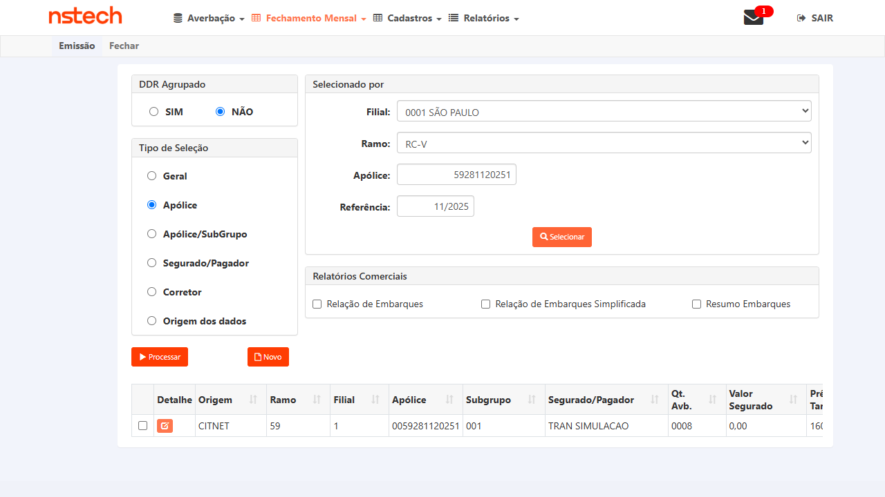
In scope: cálculo do Prêmio Líquido (e derivados Custo/IOF/Prêmio Total) no Fechamento Mensal de apólices RCV ramo 59 com Desconto por Qtd de Viagens, garantindo que o desconto é respeitado e que o valor não é sobrescrito ao interagir com campos da tela.
Out of scope: demais tipos de desconto/condição comercial não relacionados; outros ramos; correção retroativa de faturas já fechadas (ver CT-FMR-007 — decisão de negócio em aberto).
Ramo: 59 (RCV). Ambiente de execução (definição Wesley 28/07): executar em AXA (contexto original do fix) e KOVR (solicitado pela Fabiola). A TOKIO fica PENDENTE — será executada "quando liberado" (o fix específico da Tokio, TotPrTarfCos/RCV, foi revertido do #7884 — Diego 28/07; tratado à parte).
Reflexo nos relatórios (Fabiola): além do valor na tela/fatura, confirmar que o Prêmio Líquido correto (com o desconto) aparece gravado corretamente nos relatórios Resumo e Relação de Embarques — CT-FMR-009.
Grupo 1 — Prêmio Líquido com Desconto por Qtd de Viagens (núcleo do fix)
6▼Objetivo
Confirmar que, ao abrir a tela de Fechamento Mensal, o Prêmio Líquido já reflete o desconto (baseline correto).
Passos
- Login CITWEB HML AXA.
- Menu Nacional → Fechamento Mensal; localizar a apólice RCV (ramo 59) da massa.
- Abrir o fechamento da apólice e localizar o bloco de prêmio.
- Ler os campos: Prêmio Comercial, Desconto por Qtd de Viagens, Prêmio Comercial Líquido, Prêmio Líquido.
Resultado Esperado

Objetivo (núcleo do fix)
Reproduzir a ação que disparava o bug: focar/desfocar o campo Ajuste (ao lado da seta →, abaixo de "Prêmio Manutenção") sem alterar o conteúdo, e confirmar que o Prêmio Líquido permanece com o desconto.
Passos
- Com a tela aberta (valores corretos), clicar no campo Ajuste.
- Clicar em qualquer outro ponto da tela (perder o foco) — sem digitar nada.
- Reler o campo Prêmio Líquido.
Resultado Esperado


Objetivo
Como Custo, IOF e Prêmio Total derivam do Prêmio Líquido, confirmar que não foram inflados pela interação.
Passos
- Após a interação do CT-FMR-002, ler Custo, IOF e Prêmio Total.
- Comparar com os valores baseline (derivados do Prêmio Líquido correto com desconto).
Resultado Esperado
tb_cme_cit): v_pmo_cml 617,26 · v_dsc_rcv 61,73 · v_pmo_liq = 555,53 (Prêmio Líquido com o desconto, não o bruto 617,26) · v_pmo_tot 596,53. Averbações com u_fch_mes=521 (emitidas). A cobrança ao segurado NÃO é inflada.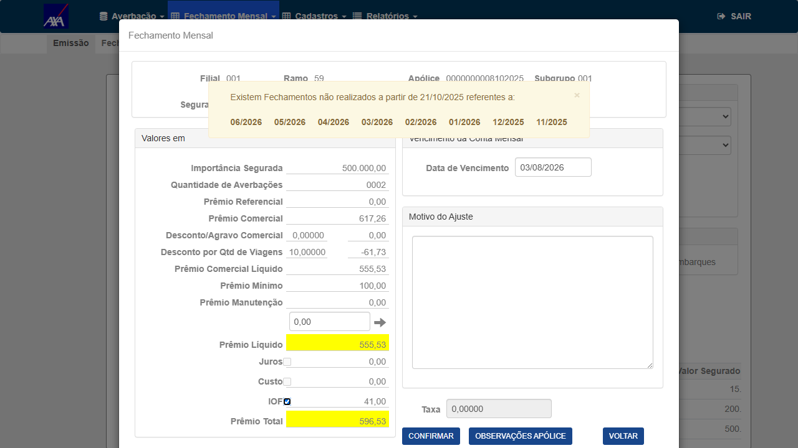
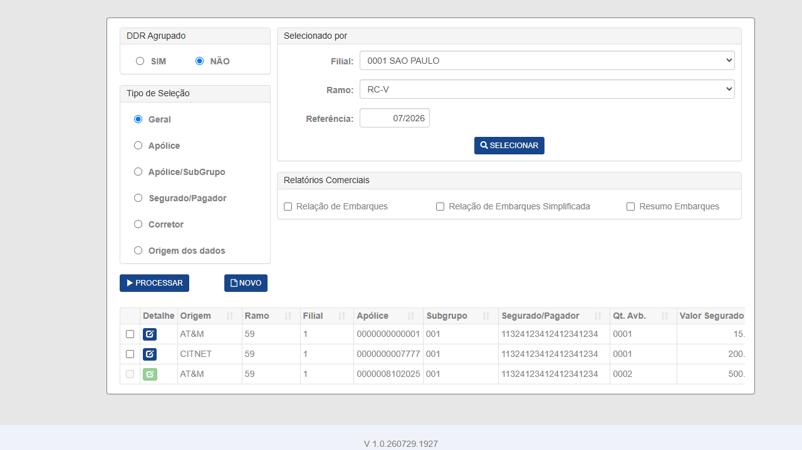
Objetivo
Confirmar que o valor persistido (fatura/conta mensal) usa o Prêmio Líquido com desconto, não o inflado.
Passos
- Concluir o fechamento/emissão da apólice.
- Consultar a fatura/conta gerada (tela e/ou banco).
- Conferir o Prêmio Líquido e o Prêmio Total persistidos.
Resultado Esperado
v_pmo_liq=555,53 (=617,26−61,73), v_pmo_tot=596,53 (✓ banco).CalculaAjax): o Prêmio Líquido permaneceu 277,77 (não saltou para o bruto 308,63) — desconto −30,86 preservado; IOF recalculou corretamente para 0,00 e Total para 277,77. Confirma que o fix vale para as demais interações, não só o Ajuste. Obs.: nesta apólice Custo/Juros/Taxa estão desabilitados; o IOF é o campo "outro" disponível que aciona o recálculo.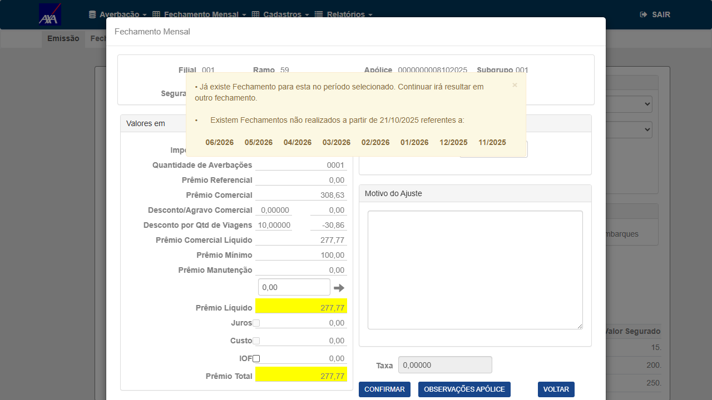
Objetivo
O card cita "determinados campos" — cobrir campos além do Ajuste, garantindo que a correção vale para as demais interações que disparavam o recálculo.
Passos
- Focar/desfocar/alterar campo editável do bloco de prêmio que dispara o recálculo (ex.: checkbox IOF).
- Após a interação, reler o Prêmio Líquido.
Resultado Esperado
| Apólice | Qtd avb | Faixa que cobre | % | Prêmio Comercial | Desconto | Prêmio Líquido | Como |
|---|---|---|---|---|---|---|---|
| 150459 | 6 | 5–200 | 7,0% | 60,00 | 4,20 | 55,80 | banco (fech 18) |
| 59001 | 20 | 0–500 | 7,5% | 4.298,75 | 322,41 | 3.976,34 | banco (fech 30) |
| 59001 | 5 | 0–500 | 7,5% | 495,00 | 37,13 | 457,87 | tela (cenário A) |
| 52831830001 | 903 | 501–1000 | 10% | 8.800,00 | 880,00 | 7.920,00 | banco (fech 29) |
| 450506630001 | 649 | 501–1000 | 10% | 6.320,00 | 632,00 | 5.688,00 | tela (cenário B) |
| 194510380001 | 2551 | 2001–5000 | 20% | 25.390,00 | 5.078,00 | 20.312,00 | tela (cenário C) |
Varredura de regressão (banco): conferidos TODOS os fechamentos RCV da TOKIO com desconto gravado — 7/7 com a faixa correta, 0 divergências. A conferência é aritmética: v_dsc_rcv = v_pmo_cml × f_dsc_fat da faixa de tb_apo_rcv_dsc que contém a qtd, e v_pmo_liq = v_pmo_cml − v_dsc_rcv.
Observação (não é defeito): no cenário A o sistema grava 37,13 para 495,00 × 7,5% = 37,125 — arredondamento ROUND_HALF_UP, a convenção financeira correta (o cálculo de conferência com ROUND_HALF_EVEN daria 37,12). Diferença de 1 centavo por convenção de arredondamento, dentro da tolerância de 0,02.
CARD 64112, posicional, em vez do layout RCV de 19 colunas — o erro reportado era LIN=0001 POS= Ramo CONTEÚDO NÃO ESTÁ PREENCHIDO). Além de ter falhado, era desnecessário: a TOKIO já possuía períodos livres com 649 e 2.551 embarques. Também não foi preciso mutar as boundaries de tb_apo_rcv_dsc, alternativa que o plano cogitava.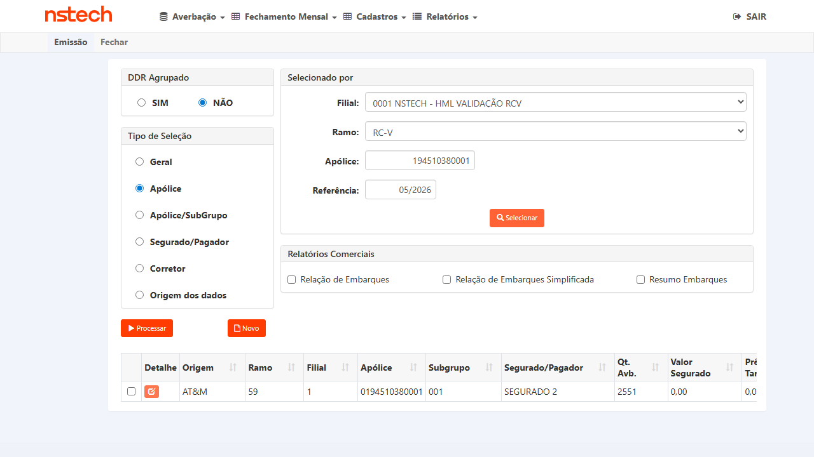
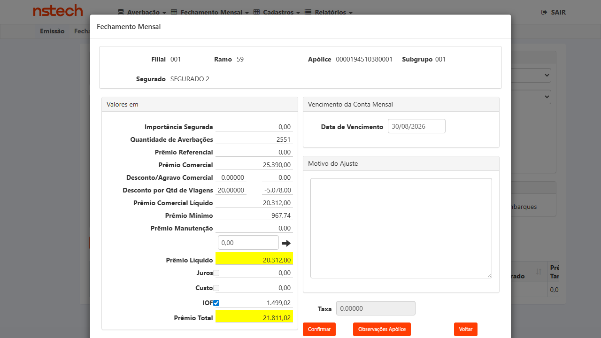
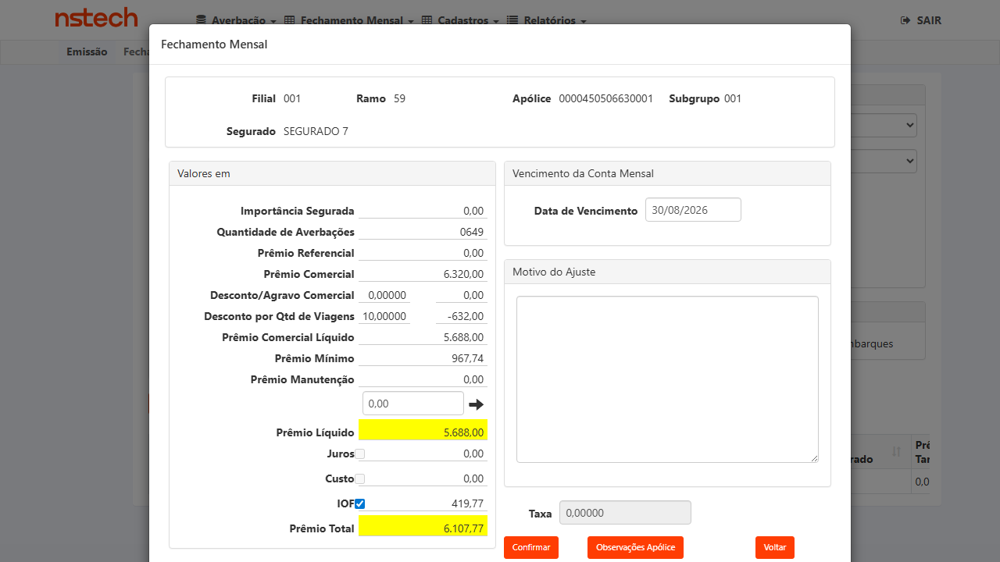
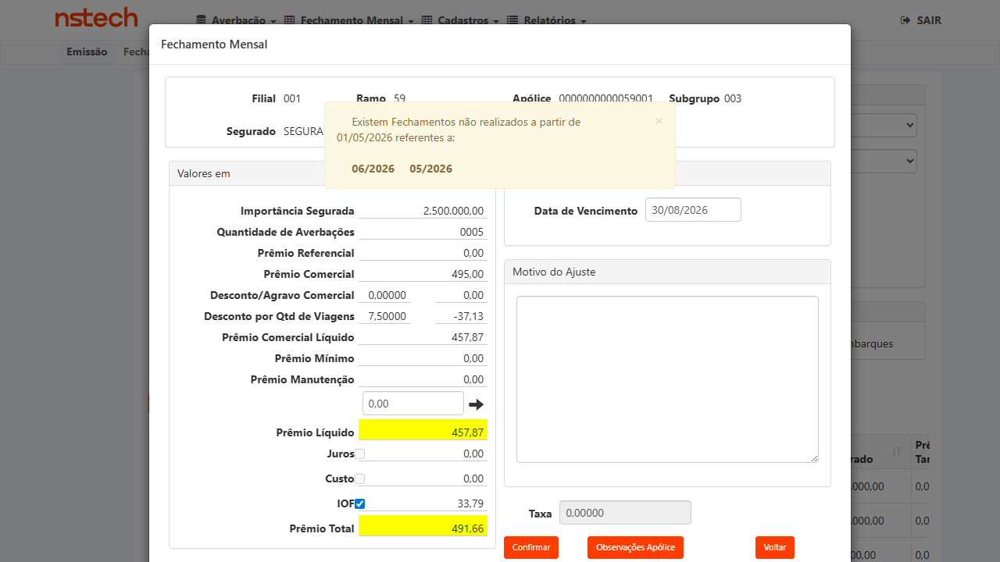
testes-automatizados/sprint-11-citweb/bug-7884/ct_fmr_008_faixas_desconto.py — multi-tenant (--tenant tokio|axa|kovr), massa descoberta dinamicamente (nenhum ID fixo), faz a varredura de banco + abre o Detalhe de cada faixa distinta e confere percentual/desconto/Prêmio Líquido. Resultado da execução de 03/08: APROVADO (banco 7/7 · tela 3/3).Objetivo (direcionamento Wesley 27/07)
Confirmar que o sistema enquadra a quantidade de embarques do mês na faixa correta e aplica o percentual de desconto correspondente sobre o Prêmio Comercial, refletindo no Prêmio Líquido.
Passos
- Consultar as faixas de desconto cadastradas na apólice (Condição Comercial / desconto por qtd de viagens).
- Para o mês de fechamento, verificar a quantidade de embarques/averbações da apólice.
- Simular/observar cenários que caiam em faixas distintas (ex.: uma qtd na faixa 0–100 → 5%; outra na faixa 101–300 → 7%) — via massa existente e/ou criando averbações que atinjam a faixa desejada (liberdade total HML).
- Em cada cenário, conferir o percentual de desconto aplicado e o Prêmio Líquido resultante.
Resultado Esperado
Grupo 2 — Regressão
1▼GET /Nacional/Emissao/CalculaAjax HTTP 200, confirmado na rede), o Prêmio Líquido permaneceu 100,00 e o Prêmio Total 107,38 — não sobrescreveu nem inflou. O fix não alterou o comportamento de apólices sem desconto. Obs.: nesta apólice o PL é regido pelo Prêmio Mínimo (não PC), e manteve-se estável — regressão OK.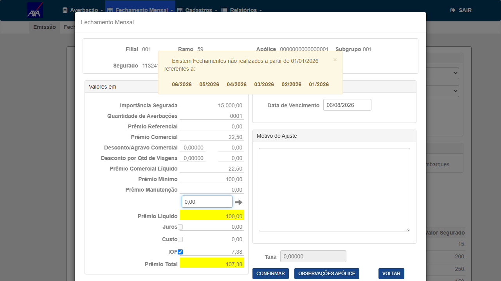
Objetivo
Garantir que o fix não alterou o comportamento de apólices sem desconto (onde Prêmio Líquido = Prêmio Comercial).
Passos
- Abrir o Fechamento Mensal de uma apólice RCV ramo 59 sem desconto por qtd de viagens.
- Ler o Prêmio Líquido; interagir com o campo Ajuste (sem digitar) e reler.
Resultado Esperado
Grupo 3 — Decisão de negócio (resolvida)
1▼Objetivo
Registrar a decisão de negócio (sem retroatividade). Não bloqueia nem compõe a homologação do fix.
Resultado Esperado
Grupo 4 — Reflexo nos relatórios de embarques (direção Fabiola/Wesley 28/07)
1▼A1:A3 (só o título) para A1:S17 com as 6 averbações e 19 colunas; o Resumo de Embarques voltou a trazer a linha de Desconto 83,25, com Prêmio Líquido 1.026,75 e Prêmio Total 1.102,52 (antes 1.185,77, calculado sobre o bruto). As três Tasks de defeito — #7956, #7957 e #7958 — estão em Done. Detalhe do antes/depois na tabela ao final deste CT.
KOVR saiu do escopo por decisão de 31/07 (Diego, orientação da Sandra): "iremos testar somente na Tokio e após a correção do merge na hml_fix, iremos criar outro card para validarmos os pontos na kovr". Portanto o CT fica aprovado no escopo vigente (TOKIO); a KOVR será coberta pelo card separado, não por este.
7884-CT009-AXA-relatorio-grid-PL555.png.b14601ade (260729.1801). Com o ambiente correto, o CT foi executado e reprovou.Massa: apólice
59001, filial 1, subgrupo 004, ref 07/2026, fatura 22001 (fechamento 2001). Banco (tb_cme_cit): comercial 1.110,00 − desconto 83,25 → líquido 1.026,75, total 1.102,52.Na tela está certo: a grid da Impressão exibe Prêmio Líquido 1.026,75 — igual ao banco.
No arquivo exportado está errado: o
COM-RESUMO-0000000059001-004-07-2026-02001.xlsx imprime
Prêmio Comercial: 1.110,00 e Prêmio Líquido: 1.110,00 (nas duas ocorrências, linhas 20 e 24) —
ou seja, o bruto no lugar do líquido, exatamente o sintoma do #7884. O arquivo não traz nenhuma linha de Desconto
e fecha com Prêmio Total: 1.185,77 em vez de 1.102,52.Conclusão: o fix corrigiu a tela/grid, mas a geração do relatório continua montando o Prêmio Líquido a partir do prêmio comercial.
COM-EMB-….xlsx vem com apenas o título (intervalo A1:A3, nenhuma linha de embarque),
mesmo sendo o único relatório marcado. Os dados existem — o Resumo da mesma fatura lista 6 embarques (MG→MG, MG→UB, RS→SP, SP→MG, SP→RJ).
É defeito separado do cálculo do Prêmio Líquido./Nacional/RelatorioFechamento/Selecionar responde
HTTP 500 ("Ocorreu um erro inesperado"), reproduzido 2x com filial 1 + ramo 59 preenchidos. Na AXA o mesmo caminho
responde 302 e monta a grid com 10 linhas. Com "Apólice/Referência" a TOKIO funciona. Defeito de ambiente/tenant, separado do #7884.59281120251, fech. 50, comercial 3.840,00 − desconto 288,00 → líquido 3.552,00.
Reexecutar assim que a navegação da KOVR for resolvida.testes-automatizados/sprint-11-citweb/bug-7884/ct_fmr_009_relatorios_fechamento.py
(novo). Arquivos exportados e screenshots em evidencias/CT-FMR-009/.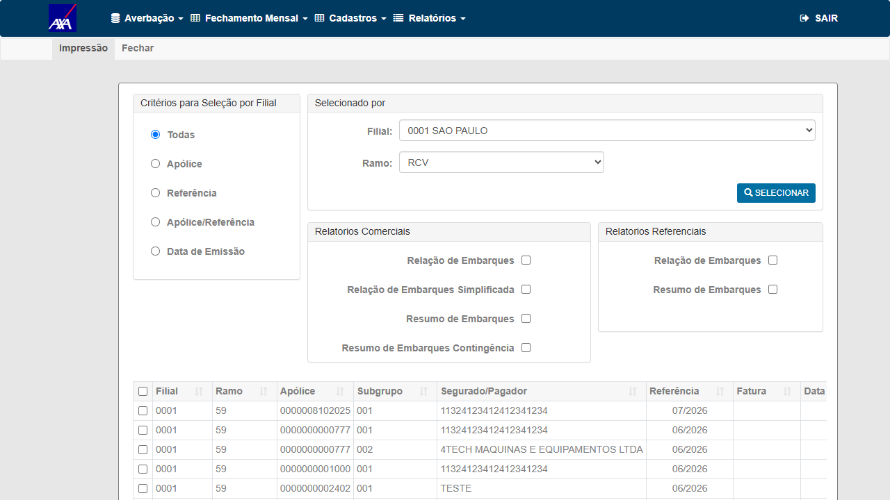
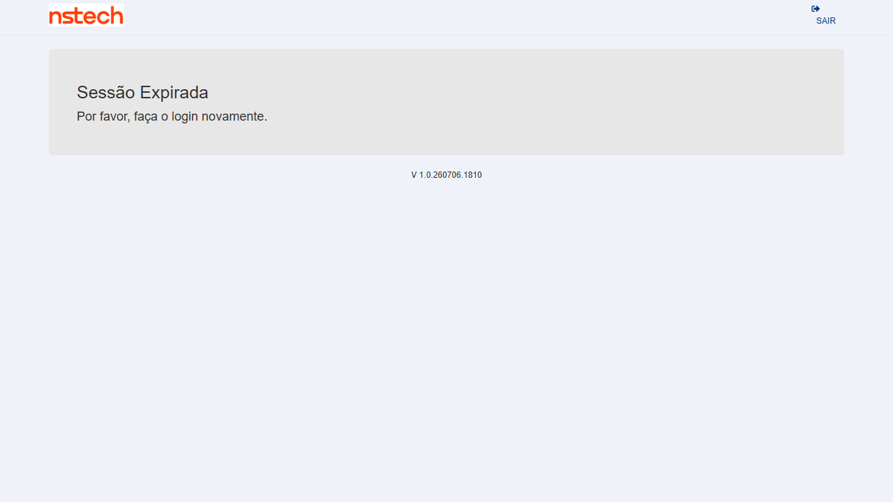
Evidências da reprovação (TOKIO · 31/07/2026 · build 260730.1556)
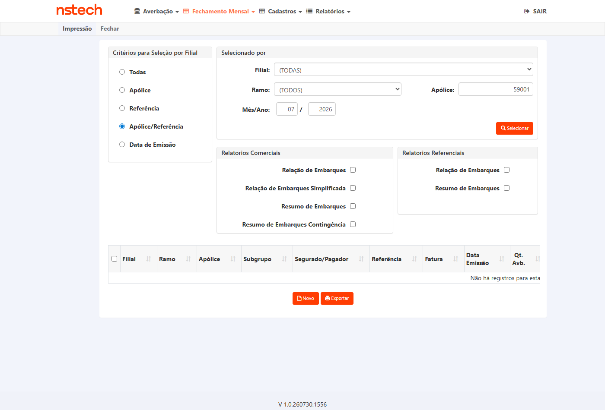
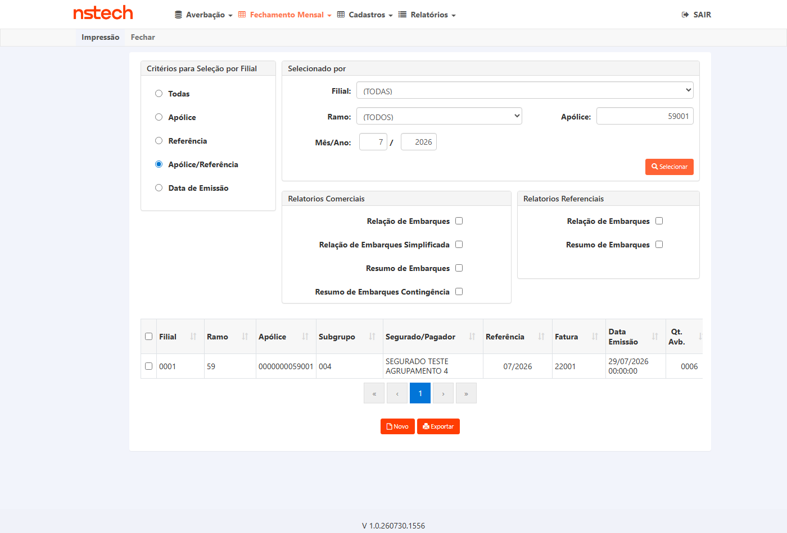
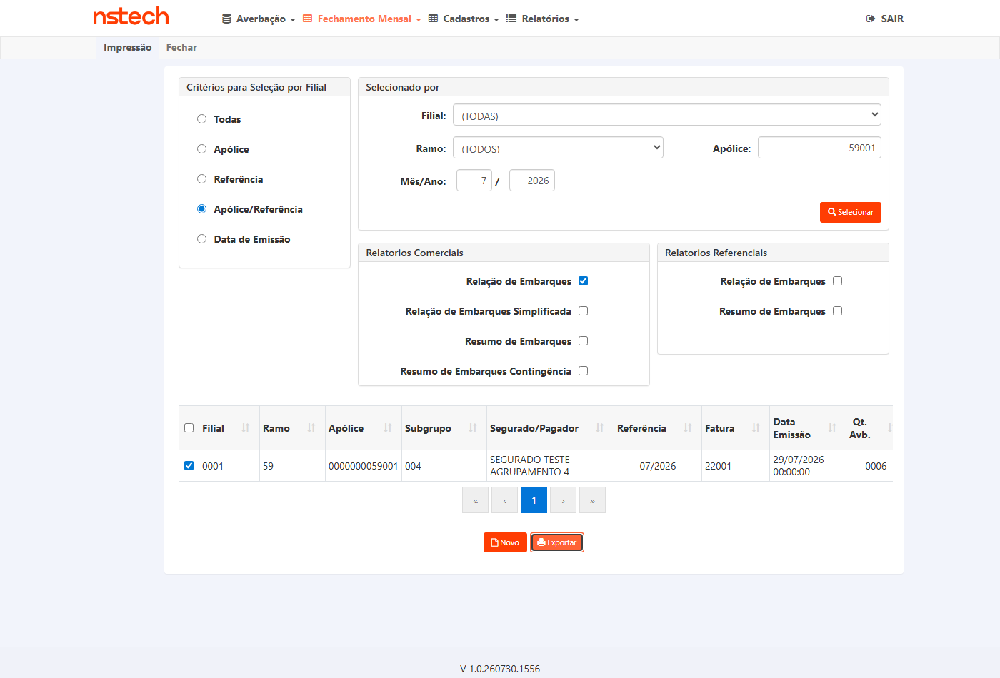
EV4 — o arquivo (evidência obrigatória do CT de relatório):
COM-RESUMO-0000000059001-004-07-2026-02001.xlsx e
COM-EMB-0000000059001-004-07-2026-02001.xlsx, ambos em
evidencias/CT-FMR-009/ e anexados ao card #7884. Conteúdo lido com openpyxl:
| Linha do arquivo | Impresso | Esperado (banco) | |
|---|---|---|---|
| Prêmio Comercial | 1.110,00 | 1.110,00 | ✓ |
| Prêmio Líquido (L20) | 1.110,00 | 1.026,75 | ✗ |
| Prêmio Líquido (L24) | 1.110,00 | 1.026,75 | ✗ |
| Linha de Desconto | ausente | −83,25 | ✗ |
| IOF | 75,77 | — | |
| Prêmio Total | 1.185,77 | 1.102,52 | ✗ |
Os 6 embarques listados no Resumo (MG→MG, MG→UB, RS→SP, SP→MG, SP→RJ) somam Prêmio Comercial 1.110,00 — confere. O erro está só na composição do Prêmio Líquido.
Objetivo (direção Fabiola/Wesley 28/07)
Confirmar que o Prêmio Líquido corrigido (com o desconto) aparece gravado corretamente nos relatórios Resumo de Embarques e Relação de Embarques — não só na tela/fatura.
Passos
- Após o fechamento da apólice (Prêmio Líquido correto), gerar o relatório Relação de Embarques (e Resumo de Embarques) do período.
- Localizar a apólice/embarque no relatório e ler o valor de Prêmio Líquido gravado.
- Comparar com o valor esperado (com desconto) da tela/fatura.
- Repetir em TOKIO e KOVR.
Resultado Esperado
| Critério de aceite | CT(s) |
|---|---|
| Prêmio Líquido reflete o Desconto por Qtd de Viagens ao abrir | CT-FMR-001 |
| Prêmio Líquido não é sobrescrito ao interagir com o campo Ajuste | CT-FMR-002 |
| Custo/IOF/Prêmio Total (derivados) permanecem corretos | CT-FMR-003 |
| Valor persistido (fatura) usa o Prêmio Líquido com desconto | CT-FMR-004 |
| Correção vale para demais campos que disparavam o recálculo | CT-FMR-005 |
| Enquadramento correto nas faixas de desconto por qtd de viagens | CT-FMR-008 |
| Apólices sem desconto inalteradas (regressão) | CT-FMR-006 |
| Faturas já fechadas — SEM correção retroativa (decidido por Wesley 27/07) | CT-FMR-007 (fora do fix, sem ação) |
| Prêmio Líquido correto reflete nos relatórios Resumo/Relação de Embarques (TOKIO/KOVR) — direção Fabiola/Wesley 28/07 | CT-FMR-009 |
- Impacto financeiro direto (Alto): valor inflado vai para a cobrança do segurado. Mitigação: CT-FMR-002/003/004 validam cálculo + persistência.
- Recálculo disparado por vários campos (Médio): o card cita "determinados campos"; o fix pode cobrir só alguns. Mitigação: CT-FMR-005 varre os campos do bloco.
- Faturas já fechadas com valor errado (Médio/negócio): retroatividade não coberta pelo fix. Mitigação: CT-FMR-007 escala a decisão a Produtos.
- Massa específica (Baixo): depende de apólice RCV 59 com desconto por qtd de viagens. Mitigação: localizar via Relação de Apólices/banco ou criar via UI (HML liberdade total).